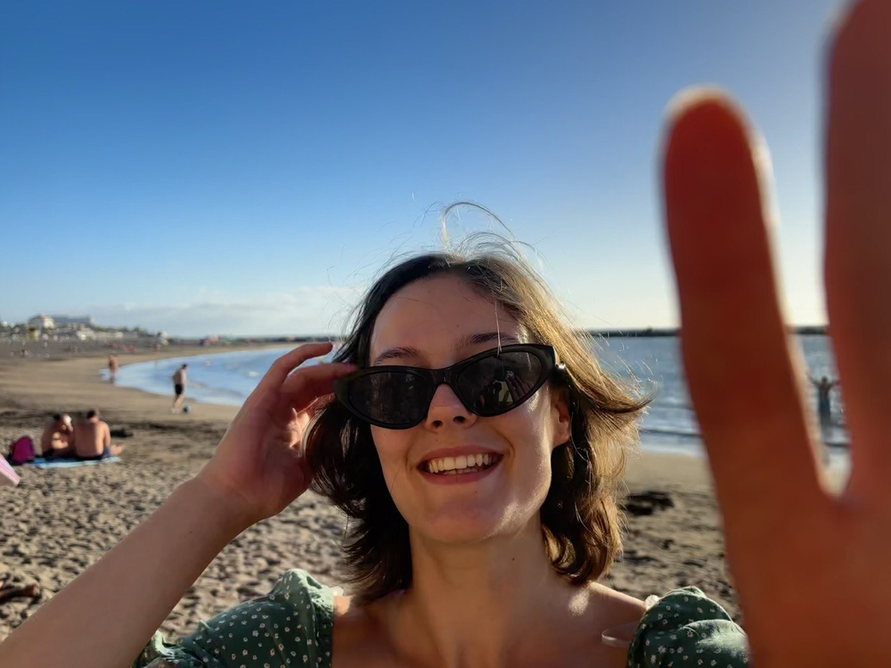

a11826289@unet.univie.ac.at

About Me
Welcome! My name is Katyayani, though most people call me Katy. I am currently pursuing a Master’s in Digital Humanities alongside studies in Historical Linguistics (Indo-European Studies). With a background in German Philology and Romance Studies (Spanish), my passion for languages naturally led me to the digital realm.
I believe that mastering digital tools is essential for effectively preserving, analyzing, and visualizing linguistic data. What I like most about the DH program is the freedom to explore diverse digital possibilities before narrowing my focus. When I’m not at my desk, I’m usually reading, practicing a new language, or heading outdoors for hiking and climbing. Oh, and I love cats.
My Research Interests
- Computational Phylogenetics & Cognate Detection
- Digital Archiving & Textual Analysis
- Indo-European Historical Linguistics